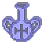

わたしはお姫様。
魔法の塔のスペシャルアイテムについて一部ですが紹介します。
わたしはお姫様。
魔法の塔のスペシャルアイテムについて一部ですが紹介します。
 |
これは『勇者のオーブ』です。
プレーヤー側の戦闘力とモンスターの戦闘力を分析し、
戦った後の結果を予測してくれます。
ただし、
十字架などで攻撃力が２倍になった場合の結果はこれと異なる為、
特にバンパイアやゾンビナイトとの戦闘結果は予測とかなり異なるはずです。
またデータセーブの機能を使うためにはこのアイテムが必ず必要です。 このアイテムは3階の老人から手に入れて下さい。
|

|
これは『知恵のオーブ』です。
今まで聞いたことのある情報を記憶してくれます。
後で改めて情報を見直せば新たな発見があるかもしれません。
これは6階で手に入りますが、 手に入れる前にスケルトンBを倒さなくては手に入れることはできません。
|
 |
これは『飛翔のオーブ』です。
階段の隣でこれを使えば、今まで行った事のある階ならばどこでも飛んで行くことができます。
何回使ってもなくなることは無いためプレーヤーの移動の手間を省いてくれます。
非常に便利なアイテムで、1階で手に入りますが、 やはりこれも手に入れる前にスケルトンBを倒さなくては取れません。
|
 |
これは『マトック』と言って、
魔法のつるはしです。
四方の壁を壊す事ができます。
非常に有効に使えるアイテムなので、いろいろ試してみてください。
これを使えばいろいろ変な事もできるはずです。
16階にいる大ダコを倒すとこのアイテムが出現します。
|
|
 |
これは『エリクサー』と言って、
魔法の回復薬です。
その時のプレーヤーの攻撃力、
防御力に応じた回復力があり、
使うポイントによっては非常に大きな効果があるでしょう。
このアイテムは誰かが持っています。 声をかけることで手にはいるでしょう。
|
 |
これは『破壊の玉』という爆弾です。四方の敵を消し去ってしまいます。
一部の敵キャラには効果がありませんが、
強すぎて攻撃できない敵キャラなどに使うと良いでしょう。
|
 |
これは『空間転移の秘宝』です。
現在いる階の他の場所へワープできます。
どこに飛ぶかは解りません。
これも使い方によっては、いろいろと変なことができます。
|